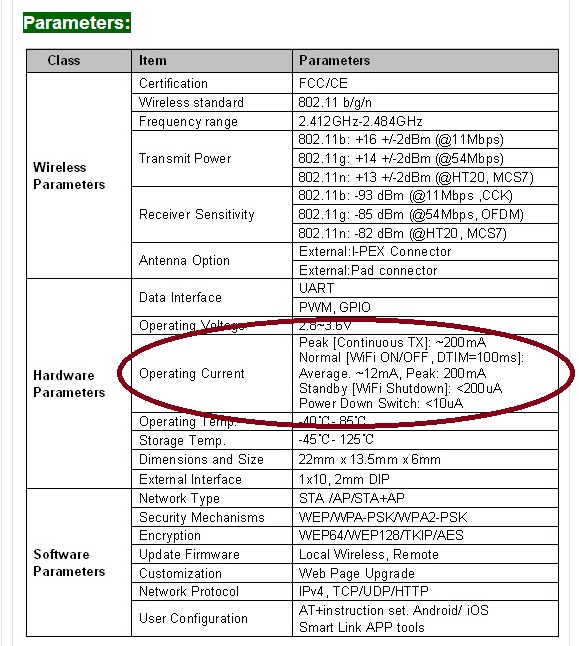

OK so I have now found out the USR Wifi232-S Low power module, which has the following specs on the web site does not actually have a standby mode. 
I have subsequently found out this is a “reserved” (ie future) feature and actually does not work. The AT+MSLP=standby command gets accepted by the module but doesnt do anything. I guess the lesson is try fully before you commit. I note the documentation on the web site is removing some of this bad information so I guess it could have been a genuine cut and paste error from one of their other device datasheets.
The silver lining to this cloud is the unit does work and does not use that much power in normal operation (around 10mA) and also connects quite quickly to the access point so as a work around I am going to switch the power off using a mosfet on the 3.3V line and power it when required. Not sure if there will be any consequences for this but I guess this is the cost of saving US$20 over the flagship RN-131 (which itself still has an unanswered flaw with the boost converter – still no replay on microchip forum on this!)
Hopefully this post will help someone.